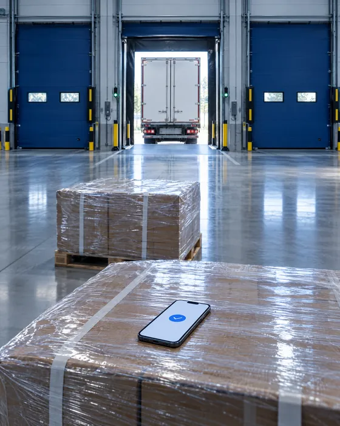
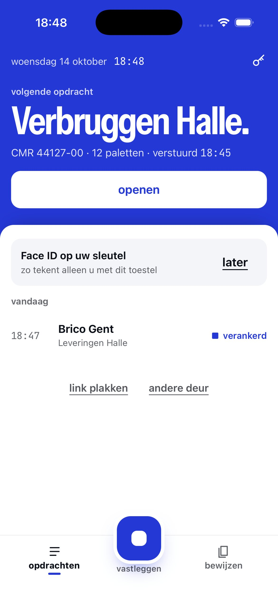
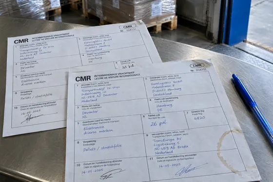
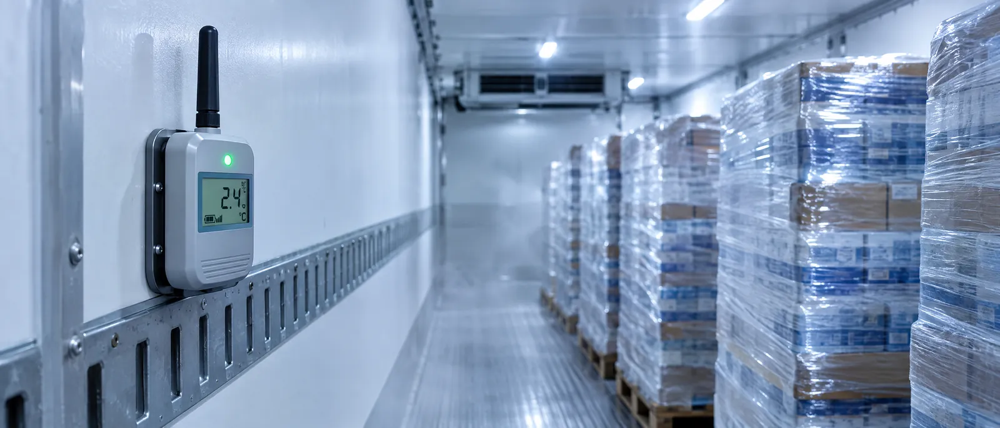
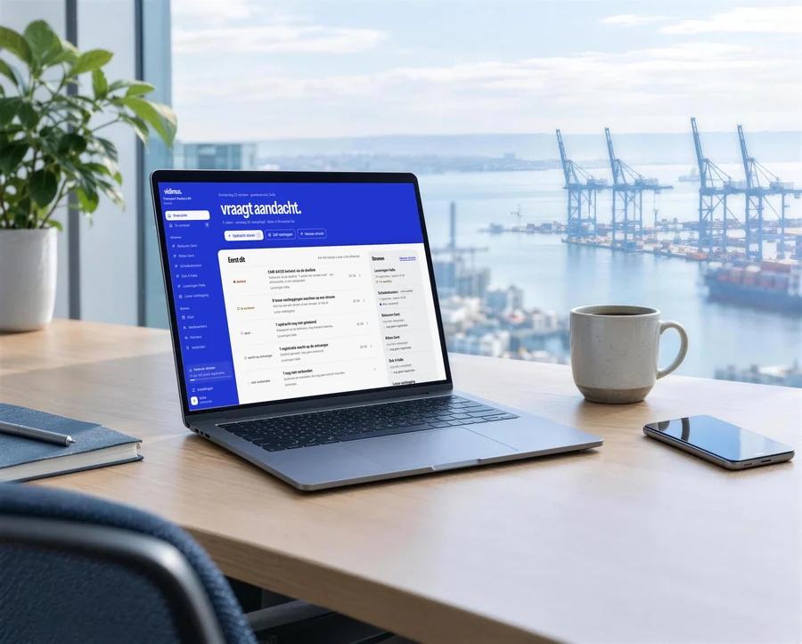
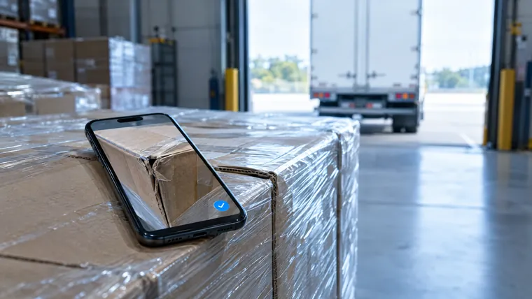
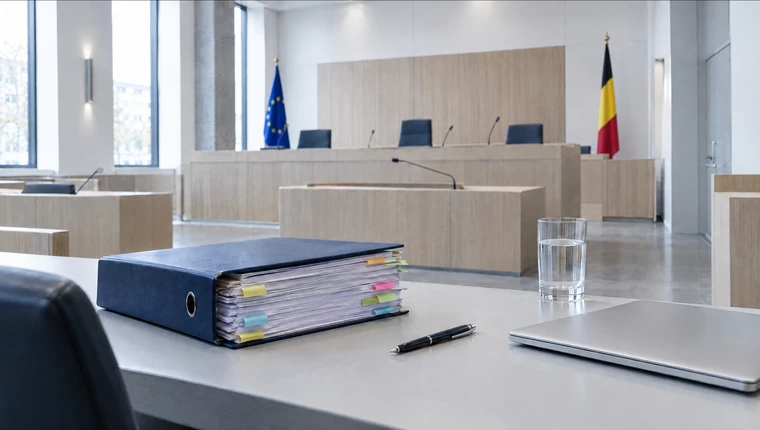

De verankeringslaag voor uw registraties.
Leveringen, foto's, metingen en documenten. Vidimus legt ze vast op het moment zelf en verankert ze binnen vijf minuten. Niemand kan ze daarna nog ongemerkt veranderen, ook wij niet. Zo vermijdt u schadeclaims, afgekeurde ladingen en dure discussies: één vastgelegde versie, voor iedereen dezelfde en door iedereen te controleren.
De eerste 100 registraties per maand zijn gratis. Geen betaalgegevens nodig. Of vervals eerst zelf een vrachtbrief →


- Gekwalificeerde tijdstempel voor klanten (eIDAS, per groep)
- Na te rekenen met de software van de Europese Commissie
- Ook verankerd in Bitcoin
- Servers in de EU
Het probleemKan uw systeem achteraf bewijzen wat er stond?
Vrijdag, levering van 26 paletten. Maandag mailt de klant: "Wij hebben er maar 23 ontvangen." Uw vrachtbrief zegt 26, de zijne 23. Zonder bewijs dat u zelf niet kunt wijzigen, betaalt u: de creditnota, de uren van uw planner, soms de klant.

Eigen systeemDe historiek zit in hetzelfde systeem als de gegevens.Een verankering buiten uw systeem.
Zo gaat het vaakDe tegenpartij zegt: “Dat is uw eigen systeem, daar kan u alles in aanpassen.” Uw historiek is waardevol, maar staat in datzelfde systeem.
Bewijs delenUw tegenpartij moet uw systeem op uw woord geloven.Een bewijs dat zij zelf controleert, zonder account.
Zo gaat het vaakU stuurt een export of een schermafdruk. Het antwoord: “Dat kan iedereen maken.” Toegang tot uw systeem om het na te kijken heeft uw klant niet, en die wilt u ook niet geven.
Meerdere systemenTMS, WMS, sensoren, foto's en ERP houden elk hun eigen historiek bij.Eén bewijslaag over al die registraties.
Zo gaat het vaakDe levering staat in het TMS, de foto's in een gedeelde map, de temperatuur in een sensorportaal. Bij een claim puzzelt iemand dagenlang om er één verhaal van te maken.
SensormetingenEen meetwaarde wordt weken later betwist.De verankerde registratie van wat de sensor doorstuurde.
Zo gaat het vaakEen klant weigert een lading: de koeling zou uitgevallen zijn. Uw logger zegt van niet, maar de grafiek komt uit uw eigen portaal, en daar twijfelt de klant aan.
AuditDe auditor moet het bewijs uit exports reconstrueren.Een bewijsbundel die hij zelf narekent.
Zo gaat het vaakElk jaar dezelfde oefening voor ISO, FAVV of een klantaudit: exports uit drie systemen, steekproeven, en de vraag of er intussen niets werd aangepast.
VerzekeringDe expert twijfelt aan wanneer de schade ontstond.De staat op het moment zelf, door de expert na te rekenen.
Zo gaat het vaakNa een schade vraagt de verzekeraar foto's en tijdstippen. Die komen uit uw eigen telefoon of systeem, en dus blijft de vraag of ze van vóór of na het voorval zijn. Het dossier ligt stil tot iemand het tegendeel bewijst.
KmoEigen onveranderbare infrastructuur bouwen is duur.Een dienst met API en app, gratis te starten.
Zo gaat het vaakEen eigen onveranderbaar archief of een blockchainproject kost maanden en een IT-team. Dus blijft het bij pdf's, mails en goede hoop.
Discussies"Welke versie is de echte?"De registratie zoals ze op dat tijdstip werd vastgelegd.
Zo gaat het vaakTwee versies van dezelfde vrachtbrief, inspectie of goedkeuring, en iedereen is zeker van de zijne. Het gesprek gaat dan niet meer over de feiten, maar over wie u gelooft.
Zo werkt het.

- Op het moment zelfRegistreren
In de app met foto, plaats en handtekening. Of vanuit uw TMS, WMS, ERP of sensoren.
chauffeur en ontvanger, elk op de eigen telefoon - Binnen enkele minutenVerankeren
Elke registratie krijgt meteen haar vingerafdruk en handtekening. Daarna volgt een tijdstempel van een onafhankelijke dienst. De tijd komt niet van u en niet van ons.
tijdstempel + Bitcoin-anker - Op elk momentControleren
Uw klant, verzekeraar of rechter controleert het zelf, zonder account. Met de bewijsbundel zelfs volledig zonder Vidimus.
ongewijzigd · 6 van 6 controles stemmen overeen

wat26 paletten · zonder voorbehoud
getekendchauffeur + ontvanger · ter plekke
plaatsKaai 913, Antwerpen
verankerdtijdstempel + Bitcoin-anker
Hoe registreert u?

De gratis app voor uw mensen, iPhone en Android:

Vervals het.
Pas het aantal paletten op deze vrachtbrief aan en kijk wat er met het bewijs gebeurt. Alles wordt live in uw browser berekend.
Aflevering — CMR
Kaai 913, Antwerpen · getekend door chauffeur en ontvanger, elk op eigen toestel
- Afzender
- Verhelst Transport BV
- Ontvanger
- Nova Logistics NV
- Colli
- 26 paletten · zonder voorbehoud
- Afgeleverd
- 4 september 2026 — 15:12
- Plaats · toestel
- 51.2302 N · 4.4160 E · ±6 m
of verander zelf een waarde, zoals iemand weken later een kopie, export of pdf zou aanpassen
Voorbeeld · fictieve registratie
ongewijzigd
Dit is exact wat op 4 september om 15:13 werd vastgelegd, getekend door chauffeur én ontvanger.
- Vastgelegd
- 4 september 2026 · 15:13:22 (UTC+2)
- Tijdstempel
- van een externe dienst, binnen vijf minuten · voor klantorganisaties per groep ook gekwalificeerd (GLOBALTRUST), doorgaans binnen 6 uur
- Anker
berekenen…- Huidige inhoud
berekenen…
DE CONTROLES6 van 6 controles stemmen overeen+
anker … · nu …stemt overeenDe sha-256 over de vijf velden is exact de vingerafdruk in het anker. Dezelfde bytes geven dezelfde 64 tekens; een andere inhoud met dezelfde vingerafdruk vinden is met SHA-256 praktisch onmogelijk.
De vijf velden geven nu een andere vingerafdruk dan het anker. Eén teken verschil, 26 → 23, en de hele hash verandert. Welk veld? Zie hierboven in blauw: {velden}.
sleutel 7f3a·91c2·e04b · handtekening 4b8e…0d17stemt overeenDe Ed25519-handtekening stemt overeen met de vingerafdruk én met de sleutel die op het toestel van de chauffeur staat. Die sleutel verlaat het toestel nooit.
De handtekening hoort bij de oorspronkelijke vingerafdruk, niet bij deze inhoud. Wie de tekst wijzigt, heeft geen handtekening van de chauffeur over de nieuwe tekst.
sleutel c2d9·5a10·3be7 · handtekening 9a04…77bestemt overeenOok de ontvanger tekende dezelfde vingerafdruk, met een eigen sleutel op een eigen toestel. Twee partijen, één inhoud.
De ontvanger tekende de oorspronkelijke inhoud. Deze gewijzigde versie is door niemand getekend.
tijdstempel nr. 5D2C 9A41 7E03 · 2026-09-04T13:13:22Zstemt overeenEen externe tijdstempeldienst tekende de wortel van de groep op 4 september 2026, 15:13:22 (UTC+2). Omdat de groep registraties van een klantorganisatie bevat, kwam er binnen zes uur ook de gekwalificeerde tijdstempel van GLOBALTRUST op (eIDAS); deze registratie is ermee verbonden via haar Merkle-pad. Niemand kan dat moment vervroegen, ook Vidimus niet.
Het tijdstempel geldt voor de wortel waarin de oorspronkelijke vingerafdruk zit. Voor deze inhoud bestaat geen tijdstempel.
groep 2026-09-04T13:10Z · 128 registraties · wortel 9e41…a7c3 · pad 7 stappenstemt overeenVia het Merkle-pad is herrekend dat deze vingerafdruk in de verankerde wortel zit. Dat lukt alleen met exact deze vingerafdruk.
Met een andere vingerafdruk komt het Merkle-pad niet meer uit op de wortel. De inhoud zit dus niet in de verankerde groep.
record 48 213 · vorig record 2c7f…e01astemt overeenDe wortel staat in het grootboek en elk record hasht het vorige. Eén record aanpassen breekt de hele keten erna.
Het grootboek kent alleen de oorspronkelijke wortel. Deze inhoud komt nergens in de keten voor.
De vingerafdruk komt overeen met het anker. U ziet wat er vastligt: het moment volgens de onafhankelijke tijdstempel, wie tekende, de plaats volgens het toestel.
Deze inhoud komt met geen enkel anker overeen. Meer zegt Vidimus niet: niet wat er veranderde, niet door wie. Er bestaat geen "lijkt op".
Zo is na te gaan of het 23 of 26 paletten waren: niet bij wie de mooiste pdf heeft, maar met een controle die iedereen zelf herhaalt. Vidimus oordeelt niet, het vergelijkt, op een controlepagina die uw klant opent zonder account en zonder Vidimus op zijn woord te geloven. Wie gelijk heeft, beoordeelt de rechter.
Wat kost woord tegen woord u?
Vul uw eigen cijfers in. Er wordt niets verstuurd.
Privé — alles wordt in uw browser berekend. Er wordt niets opgeslagen, verstuurd of bijgehouden.
Ter vergelijking: 150 registraties per maand kosten € 19 — en van elke verankerde registratie staan inhoud, bron en moment vast.

Wat u wil weten.
Aanvaardt een rechter dit?
De rechter weegt elk bewijs vrij. Een gekwalificeerde tijdstempel krijgt in de hele EU het vermoeden dat datum en tijd juist zijn (eIDAS, art. 41). Vidimus toont wat er vastlag; wie gelijk heeft, beslist de rechter.
Wat als Vidimus stopt?
Uw bewijs blijft werken. Elke bewijsbundel controleert u zonder Vidimus, met een klein script of met de software van de Europese Commissie. Bij stopzetting hebt u negentig dagen om alles mee te nemen.
Kan Vidimus mijn gegevens lezen?
In een gewoon logboek staat alles versleuteld op servers in de EU, met een eigen sleutel per organisatie. Onze server opent uw inhoud alleen wanneer de dienst dat nodig heeft, zoals tonen, zoeken of een bewijsbundel maken, en elke opening staat in uw inzagen. Wilt u dat Vidimus ook technisch niets kan lezen? Kies een vertrouwelijk logboek: de telefoon of uw systeem versleutelt alles vóór het verzenden en alleen u hebt de sleutel. Dan ziet Vidimus de vingerafdruk en een korte envelop (soort, referentie, bron en tijdstip), niet de inhoud. Installeren hoeft u niets, u bewaart één herstelbestand.
Moet ik mijn software vervangen?
Nee. Uw TMS, WMS of ERP blijft de bron. Vidimus legt de registraties die ertoe doen vast en verankert ze, via de app of een koppeling. Die koppeling doet uw leverancier of een AI-agent met één instructie.
Wat telt als één registratie?
Eén vastgelegd moment: een levering, foto, inspectie of document. Tien foto's van dezelfde levering, met de handtekening erbij, zijn samen één registratie. Metingen van een sensor tellen niet apart.
"Wij tekenen met naam en gezicht voor wat we bouwen. U belt niet met een supportdesk — u belt met wie het gebouwd heeft."
En als wij er niet zijn? Het bewijs hangt niet aan ons: elke bundel is zonder Vidimus te controleren, back-ups gaan elke nacht versleuteld naar opslag met Object Lock, en bij stopzetting hebt u negentig dagen om alles mee te nemen. Antwoord binnen één werkdag is standaard; een SLA met gegarandeerde reactietijden kan bij jaarcontract.
Elke start persoonlijk opgevolgd, van eerste koppeling tot eerste anker
Begin vandaag: de eerste 100 registraties per maand zijn gratis.
Zonder betaalgegevens. Een bestuurder identificeert uw bedrijf één keer met de eID; daarna maakt u uw eerste logboek in enkele minuten.